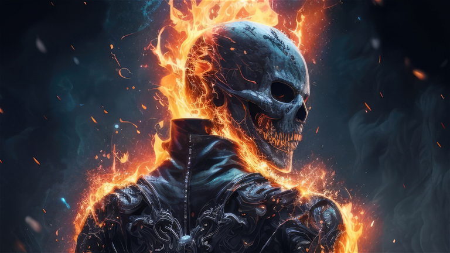

About Ghostrider
Ghostrider mà tui biết là đến từ nhân vật Johnny Blaze do Nicolas Cage thủ vai, ổng giỏi vl và cái nhân vật phản anh hùng này cũng mạnh vl luôn!
Ghosrider and his power!
- Ổng có thể nâng được một vật 25 tấn
- Ổng có thể hút thuốc mà không cần hộp quẹt
- Vũ khí mạnh nhất của nhân vật này là ánh nhìn ăn năn
=> đây là loại vũ khí mà có thể khiến người nhìn vào mắt ổng gánh chịu những tội ác mà mình đã làm

Ghostrider's girlfriend!
Nhân vật bạn gái của Johnny Blaze tên xxx được thủ vai bởi Roxane, là người vợ của diễn viên Ryan Ghosling, má kh hiểu sao hai ông bà này cưới nhau được hay thiệt
- Johnny và bạn gái của anh ấy quen nhau từ lúc trẻ
- Họ chia tay năm 17 tuổi vì anh Johnny lông bông và gặp lại nhau khoảng hơn 10 năm sau đó
- Diễn viên diễn vai này hot vcl vào thời điểm mà bộ phim ra mắt (2006)